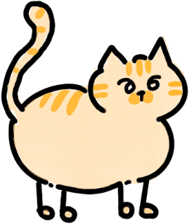

完成课程报告
- 阅读第三章与课程讲义
- 结合课堂案例，列出提纲
- 完成写作，检查提交文件


结合课堂案例，整理核心观点
第三章、课程讲义
日期待确认
先阅读 → 列提纲 → 写作与检查
AI 建议，可修改 核对后，再保存
核对后，再保存
别只摘抄资料，写出你的理解。
截止日期与提交格式还需确认。
阅读、提纲、写作是建议顺序，可以按实际情况调整。
AI 建议 · 示例每一段录音，留下一张便签。
核对示例便签并确认加入后，示例日程会出现在这里。
上方示例日程仅保存在此浏览器，尚未接入系统日历和通知。
这是录音便签的本地交互演示。猫狗沿用你们的原创图稿。
切换页签、核对信息、加入日程、标记完成。保存后刷新仍可查看。
上传录音后可在本机转成文字，再提取任务并核对保存。请先配置转写环境和 AI 密钥；录音豆同步和系统提醒尚未接入。示例与后端结果分别标注。
示例保存到本机；正式任务仅在后端确认成功后显示已保存。
录音便签 · 本地交互演示